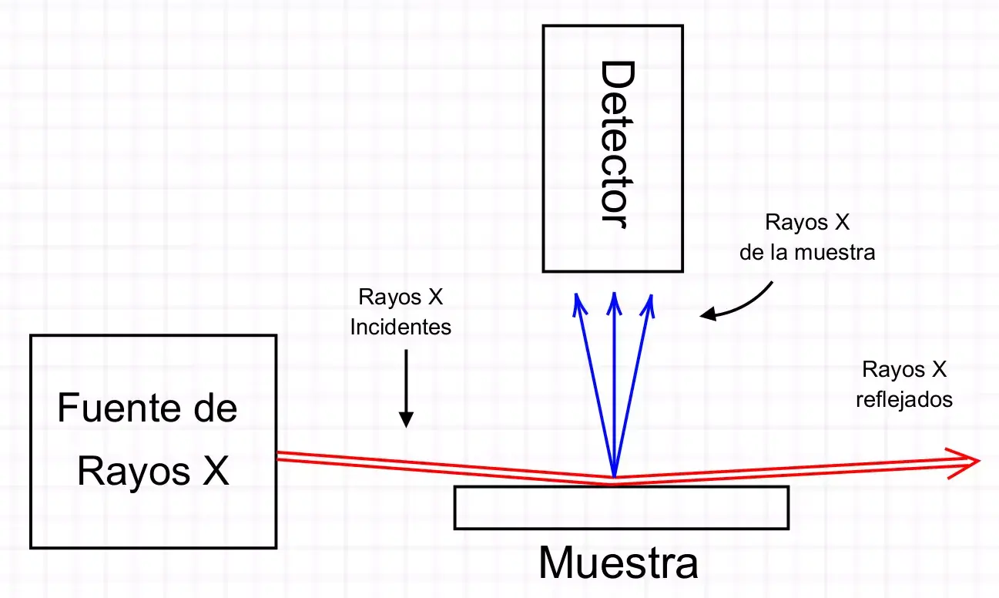
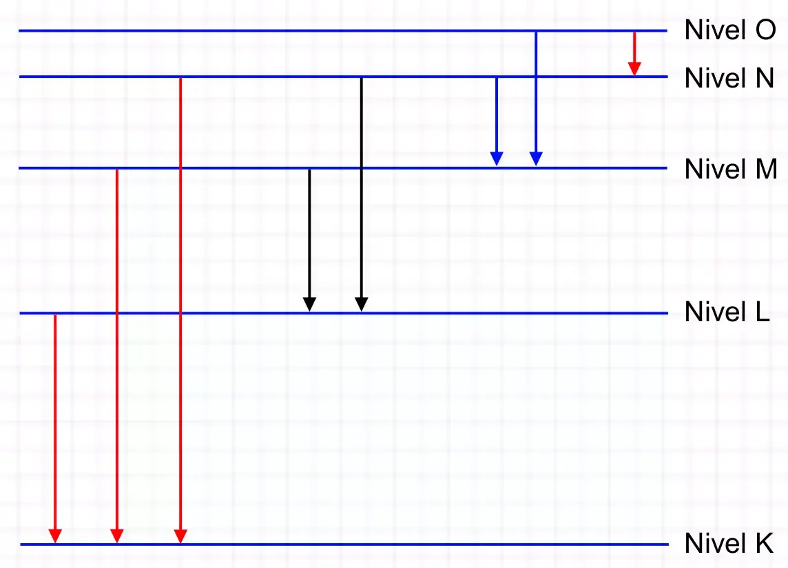
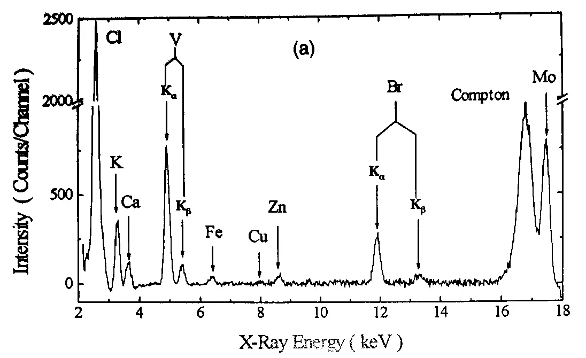

Análisis Multielemental usando Rayos X
Todo material está formado por moléculas y éstas a su vez están constituidas por átomos. Se puede caracterizar un material, estudiando sus moléculas y/o sus átomos. La Fluorescencia de Reflexión Total de Rayos X (TXRF por sus siglas en inglés) identifica y mide la concentración de los elementos que constituyen una muestra.
Para saber qué hay dentro de algo, en general, hay que actuar sobre ese algo y esperar su respuesta. En el caso de la técnica TXRF, si se tiene una muestra adecuada de cualquier material, ésta se bombardea con rayos X (representados en color rojo, Figura 1), dando lugar a una reacción en la que la muestra emite rayos X (en color azul) cuyas energías e intensidades, registradas en un detector especial, permiten identificar y cuantificar los elementos que conforman la muestra.
Figura 1: Esquema del arreglo experimental utilizado para el análisis multielemental de una muestra usando la técnica de TXRF.
Cada átomo es un sistema cuántico, es decir, que solamente puede encontrarse en ciertos estados con determinadas energías. Las rayas horizontales en la Figura 2, identificadas por K, L, M, N y O, representan algunos niveles de energía de un átomo hipotético. Un átomo está formado por un núcleo pequeño y masivo alrededor del cual orbitan partículas denominadas electrones. De la Física Cuántica se sabe que los electrones de un átomo se colocan en los niveles que se muestran en la Figura 2, llenando primero los niveles más bajos. Cada nivel tiene un número de ocupación, esto es, un máximo de electrones permitido. Los átomos más pesados pueden tener electrones hasta el nivel O y más arriba.
Figura 2: Esquema hipotético de los niveles de energía de un átomo (líneas horizontales) y transiciones electrónicas entre niveles (flechas verticales).
En el momento en que la fuente de rayos X bombardea la muestra (Figura 1), cada rayo X (denominado fotón) que incide sobre ella tiene una cierta probabilidad de interactuar con cualquier átomo del material, sacando uno de sus electrones. Si el electrón que sale, por ejemplo, se encontraba originalmente en el nivel K (Figura 2), entonces, después de salir, deja un lugar vacío en ese nivel. Los físicos dicen que el átomo en esa condición está excitado. Esto quiere decir que el átomo como sistema adquiere un nivel de energía mayor. A esto se suma que todo en la naturaleza evoluciona o procede en la dirección de menor energía. Por esta razón, un electrón de un nivel de energía superior al K, por ejemplo el M, puede hacer un transición hacia el nivel K que es de menor energía. Al hacer dicha transición, el átomo baja su energía emitiendo un fotón también denominado “cuanto de energía” o “cuanto de radiación electromagnética”. Se considera que el fotón actúa como una partícula que tiene una energía particular.
Realmente un átomo puede emitir muchos fotones con distintas energías dependiendo del nivel del cual “cayó” el electrón que llenó el vacío del nivel K. En la Figura 2 se muestran distintas flechas verticales dirigidas hacia abajo que representan diferentes transiciones electrónicas que pueden ocurrir cuando se produce un vacío en el nivel K. Por cada una de estas transiciones se genera un fotón con una energía distinta típica de los rayos X.
Figura 3: Espectro de energía de los rayos X emitidos por una muestra de líquido amniótico humano obtenido a partir de la técnica TXRF.
Si un electrón del nivel L sale del átomo, se crea un vacío en este nivel y los electrones de niveles superiores en energía (M, N, O, …) tenderán a “caer” hacia el nivel L, emitiendo otro conjunto de fotones. Estos fotones son particulares de cada átomo, al igual que los fotones que se originan de las transiciones al nivel K. Podemos denominar “patrón de un átomo” como el conjunto de todas las energías de los fotones emitidos por dicho átomo.
Desde que empezó la investigación atómica se han compilado en publicaciones científicas los patrones del mayor número de átomos posible, en la región correspondiente a la energía de los rayos X, que es relevante para la aplicación de la técnica TXRF. Existen otras compilaciones en las regiones de energías asociadas a los rayos gamma, ultravioleta, infrarrojos, etc., que son importantes en otras áreas de la física teórica, experimental y aplicada.
Supongamos que una muestra contiene tres tipos de átomos: cadmio, hierro y plomo (Cd, Fe y Pb respectivamente). Al ser esta muestra irradiada por rayos X, todos los átomos del Cd reaccionan emitiendo rayos X propios del Cd con energías particulares, distintas a las de los rayos X emitidos por el Fe y el Pb. Todas estas energías son registradas por un detector especialmente diseñado y construido para detectar rayos X. El detector se coloca, como se muestra en la Figura 1, de modo que solo detecta los rayos X provenientes de los átomos presentes en la muestra.
La fuente de rayos X o como se conoce, el tubo de rayos X, se coloca cerca de la muestra y sus rayos inciden sobre ella para excitarla con ángulos tan pequeños (Figura 1), que tanto los rayos incidentes como los reflejados (representados en color rojo), la “irradian” maximizando su acción sobre la muestra y, por lo tanto, haciendo intensas las señales de rayos X que de esa muestra se originan y que son registradas en el detector para caracterizarla. La peculiaridad de la técnica TXRF es que bajo la condición de Reflexión Total, casi todos los rayos reflejados por la muestra, por no decir todos, actúan sobre ella misma reforzando la acción de los rayos incidentes sobre ella y, consecuentemente, haciendo más eficiente la medición que se desea.
En la Figura 3 se tiene un espectro de TXRF obtenido para una muestra de líquido amniótico. Cada pico identifica una energía de rayo X proveniente de un elemento particular contenido en la muestra. Según el espectro, esta muestra contiene cloro (Cl), potasio (K), calcio (Ca), hierro (Fe), cobre (Cu), zinc (Zn) y bromo (Br). Los otros elementos que se observan son externos a la muestra. La altura y el área de cada pico están relacionadas con la concentración del correspondiente elemento. La técnica de TXRF ha probado ser útil para cuantificar una gama amplia de muestras de todo tipo, entre las que se incluyen muestras médicas, ambientales y en general, muestras de interés científico y tecnológico.
Mayo 22, 2023
© kacioleus